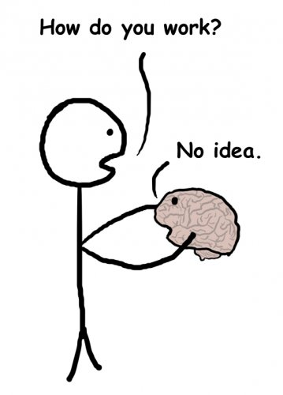

--Michael Markham
‘I used to think the brain was the most important organ in the body,
until I realized what was telling me that.’
--Emo Phillips
“A stroke may be an appropriate metaphor for an experience which in some cases is quite debilitating and takes years to recover from. Ramana Maharshi and U.G. Krishnamurti are well known examples.” (this is sarcasm folks )
--Patrick Kenny, Phd
It watches you, you know.
It watches with awareness – awareness of the mind, the ego, the self with all its stories, convictions, and histories. It watches that self with peace and gentle acceptance. Not to mention, bliss.
What are we talking about?
Well, the right hemisphere of the human brain of course. (You thought I meant something else?)
The right side of the brain is where presence, happiness, a sense of unlimited vastness, oneness, and non-individuality live.
"My right brain did not recognize the boundaries of my body. Usually you know where you begin and end. I felt as big as the universe! I was the collective whole, connected to everyone and everything—I was completely fluid."
--Jill Bolte Taylor
The right brain is where the divine is experienced.
And it is quietly aware of what we think of as “ourselves”.
"Why is the right hemisphere generally willing to bear silent witness to the errors and confabulations of the left? Could it be the right hemisphere is used to it? The non-speaking hemisphere has known the true state of affairs from a very tender age. The point of view from which you are consciously reading these words may not be the ONLY conscious point of view to be found in your brain. It is one thing to say you are unaware of a vast amount of activity in your brain. It is quite another to say that some of this activity is aware of itself and is watching your every move." --Sam Harris
To seekers of enlightenment or “god consciousness”, this might all sound vaguely familiar.
On the other hand, the left hemisphere of the human brain provides what is commonly called the “inner voice,” along with language, memory and the ability to figure things out.
The left side manufactures, defends, and inserts into everywhere possible,
The individual self.
The left side houses the sense of self.
Not an actual self of course. There’s no little person inside that brain. Just a sense of one.
Turns out, if the human mind lives anywhere, it lives in the left side of the brain.
Which is why certain placements of left-brain stroke can shut down the mean voice in the head and leave connection to God, love and bliss in its place, in a heartbeat.
“I do not see how a non-dual awakening can be anything other than a physiological change in the brain... Symbolic thought is mostly mediated by language, so it is easy to see how shutting down the language faculty by a stroke or by less drastic means could act as a mechanism for plunging the mind into non-dual awareness.”
--Patrick Kenny, Phd
Now to be clear, this is not to say, “Oh yay, gimme a stroke!”
Not least because, in order to have such a grand experience, a stroke has to happen only in exactly-placed centers of the brain.
Otherwise it’s just misery and wordless anger and an inability to speak, function, drive, or button your pants.
Most serious left-brain damage leaves people desperately wishing, for the rest of their lives, for their old life back.
Or y’know, dead.
So no, I’m not advising it. Not recommended.
Luckily in healthy, undamaged brains, the two sides are connected and work in harmony all day every day, each doing their respective jobs.
“The notion of a separate organism is clearly an abstraction, as is also its boundary. Underlying all this is unbroken wholeness even though our civilization has developed in such a way as to strongly emphasize the separation into parts.”
--David Bohm
So then what is your friendly Mind-Tickler suggesting by this discussion?
Are we saying that self-realization and enlightenment is simply brain stuff? Is consciousness only a brain function?
Considering all the evidence that trees and bacteria and other life forms are also conscious, though they don’t have a brain we can point to, maybe we could ask different questions.
Because it may be not that consciousness lives in the brain, but rather, that consciousness, always everywhere unnoticed, expresses itself utilizing the hardware of the brain.
Much like vibrations coming through a theremin, or radio waves coming through a radio, need the hardware in order to be received and heard. Vibrations and waves apparently invisible and not there, until the instrument picks up and plays them.
So what if the enlightenment so many are chasing- the oneness, connection, seeing that the self is fiction, or the bliss and beauty of the vast divine- is in there, right now…
Just waiting for the instrument to play it?
Waiting for the left brain to stop its loud bullying and dominating verbal puffery just for a moment, in order to allow perception of something much quieter, much softer, but already present?
What if enlightenment is always here, and everyone - as long as we’re not brain damaged and even if in certain ways we are- carries this availability?
An enlightenment which doesn't have to be accessed, or known, or attained, or kept permanently.
Because it’s there already.
Right there in the right brain.
Always.
Just as so many teachers have said, in so many different ways, with the same message, for centuries.
Because if it is the brain which gives access to the divine,
then God is here.
And It
is us.
Click here to watch Judy on Buddha at the Gas Pump
Click to watch Judy and Walter have fun chatting about about
nonduality, the self, consciousness, awareness, free will
and other light and breezy stuff
Judy And Robert Saltzman talk nonduality
and again: https://www.youtube.com/watch?v=7fv_vsvaejs
and again: https://www.youtube.com/watch?v=3DAn8Rqg3I0
“No brain, no lotus”
--Judy
